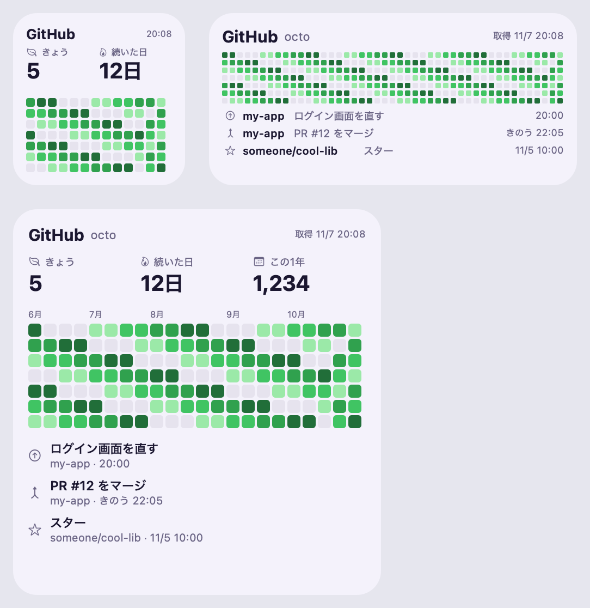
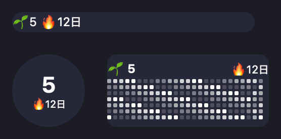

入れ方
大きさごとに出るもの
| 小 | きょうの数と続いた日数、ここ13週の草 |
|---|---|
| 中 | 44週ほどの草と、最新の行動3件（何をした・リポジトリ・時刻） |
| 大 | 月の名前つきの草、きょう・続いた日数・この1年、最新の行動3件 |
| ロック画面 | 1行は「きょうの数・続いた日数」、丸はきょうの数、長方形は短い草 |
続いた日数は、きょうまだでも、きのうまで続いていれば消えません。ウィジェットは iOS の都合で15分〜1時間ごとに描き直されます。
新しい版にするとき
感想・不具合は Issue へどうぞ。